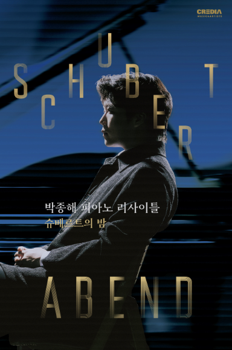
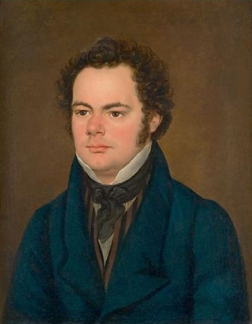
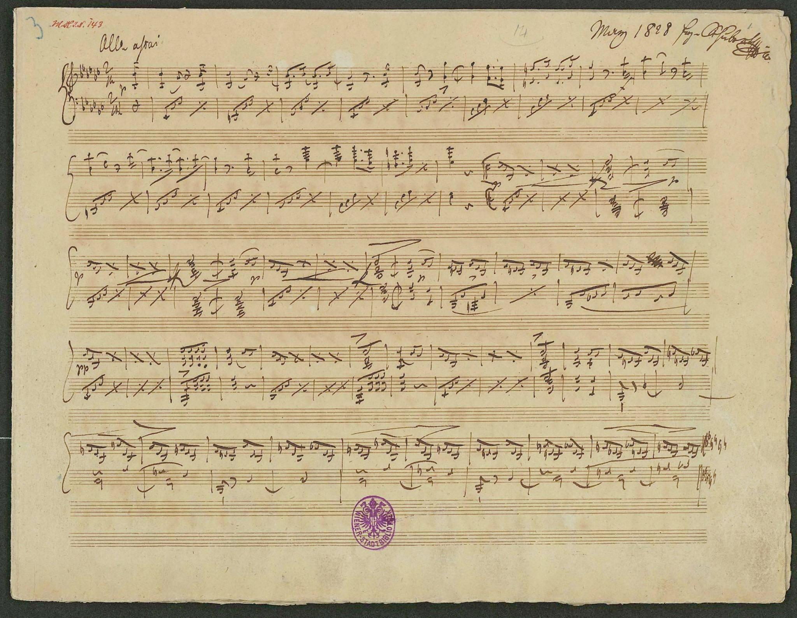
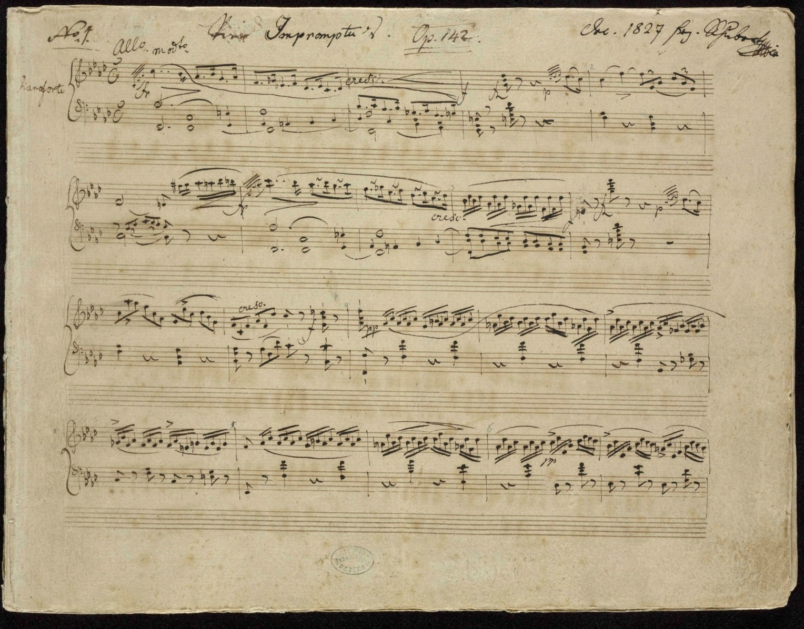
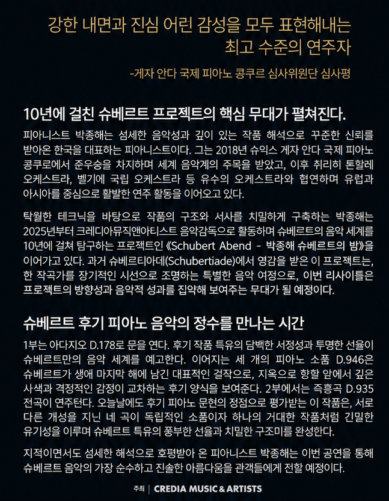

슈베르트의 환생
슈베르트의 환생일까 싶어 찾아본 슈베르트의 초상화. 슈베르트가 오늘날의 피아니스트로 다시 태어나 자신의 곡을 연주한다면 이런 느낌일까. 박종해의 연주에서 느낀 놀라운 일체감.

시간은 참고 녹음·출판사 자료에 근거한 대략의 연주 길이. 반복·템포·편곡에 따라 차이. 나이는 표기한 작곡·개작 시점의 만 나이.

프란츠 슈베르트 · 1797.1.31–1828.11.19
피아니스트 박종해 · 1분클래식
코랄을 닮은 도입과 노래하듯 이어지는 선율, 다양한 장식음. 팸플릿은 모차르트와 초기 베토벤의 영향, 그 안에서 드러나는 슈베르트 특유의 서정성을 함께 짚는 해설. 중간부의 화성 변화와 처음 선율이 돌아올 때 달라지는 반주도 감상 포인트.
1815년 빈에서 아버지의 학교 교사 일을 돕고, 살리에리에게 작곡을 배우던 시기의 피아노 작품. 어린 작곡가가 성악뿐 아니라 기악에서도 자신의 어법을 탐색하던 때.
완성된 첫 판본과 단편으로 남은 둘째 판본이 존재. 수정 악보를 함께 보면 초기 작곡 과정을 살펴볼 수 있는 자료. 사이트의 참고 연주와 악보는 첫 판본이며, 이번 공연의 연주 판본은 미확인.
작곡·판본 자료 ↗제1곡은 불안정하게 몰아치는 부분과 평온한 부분의 대비. 제2곡은 뱃노래를 닮은 선율이 돌아오는 사이에 어둡고 신비로운 두 에피소드가 끼어드는 구성. 제3곡은 밝은 춤 리듬과 당김음, 가운데 넓게 펼쳐지는 찬가 같은 부분의 대비. 곡마다 다른 성격을 만드는 리듬과 음색에 주목.
제1·2곡은 슈베르트가 세상을 떠난 해인 1828년 5월의 작품. 제3곡의 정확한 작곡 시점은 불명확. 말년에 즉흥곡과 《악흥의 순간》의 출판이 이어지던 시기에도, 이 세 곡은 생전 미출판으로 남은 작품.
사망 40년 뒤인 1868년, 브람스의 편집을 거쳐 출판된 유작. 제1곡에서 슈베르트가 삭제한 부분을 초판이 다시 수록해, 판본에 따라 구성과 길이에 차이. ‘유작’은 이곳에서 사후 출판 작품을 뜻하며, 마지막으로 작곡한 작품이라는 뜻은 아님.
작곡·판본 자료 ↗
제1곡은 장조·단조와 서로 다른 성격의 선율 사이를 오가는 흐름. 제2곡은 부드러운 미뉴에트와 아르페지오의 셋잇단음표가 이어지는 트리오의 대비. 제3곡은 《로자문데》에도 쓰인 선율과 다섯 변주. 제4곡은 당김음·강세의 이동·독특한 음계 진행이 만드는 헝가리풍 춤의 성격으로 마무리.
《겨울 나그네》를 작곡한 1827년, 빈에서 완성한 두 번째 즉흥곡집. 대규모 기악곡의 출판이 쉽지 않았던 상황에서 피아노 소품도 적극적으로 출판사에 제안하던 때. 1828년 쇼트에 제안했으나 출판이 성사되지 않은 작품.
1839년 디아벨리가 사후 작품번호 142로 출판한 유작. Op. posth.는 ‘사후 출판’의 뜻. 슈만은 네 곡을 하나의 소나타처럼 해석했으며, 오늘날 슈베르트 피아노 소품의 주요 레퍼토리.
작곡·판본 자료 ↗
2026.10.16 공연 팸플릿 · 프로필 p.9 · 신예슬 인터뷰 pp.12–16의 내용 요약. 연주자의 견해와 경험에 해당하는 부분.
2025년부터 크레디아클래식클럽과 함께 시작한 《Schubert Abend》. 매년 다른 주제와 레퍼토리로 슈베르트를 탐구하고, 연주자와 음악감독의 역할을 함께 맡는 10년 계획.
작곡가의 뜻을 전달하는 역할에서 한 걸음 더 나아가, 슈베르트를 통해 지금 자신의 내면을 전하고 싶다는 이야기. 완성된 작품뿐 아니라 단편과 방황에도 공감하며, 현재 30대인 자신의 삶과 연결하는 시각.
포르테피아노를 직접 만지며 옛 작품의 텍스처와 빠르고 가벼운 아티큘레이션을 새롭게 이해한 경험. 슈베르트가 상상한 소리를 오늘의 현대 피아노로 어떻게 전달할지 고민하는 접근.
동일한 곡도 그날의 감정과 무대에 따라 달라지는 연주. 자신의 해석을 일방적으로 보여주기보다 관객과의 호흡 속에서 그 순간의 음악을 찾는 태도. 화려하게 꾸민 소리보다 감정이 과장 없이 전해지는 소리를 지향한다는 설명.

피아노 스승님 YJ Seo와 함께한 슈베르트의 밤
너무나 감동적이었던 공연. 청중을 사로잡는 무대의 흡인력과 박종해만의 감각. 한 번 그의 연주를 들으면 누구라도 다시 공연장을 찾을 수밖에 없을 것 같은 피아니스트.
1·2번: 공연장 앵콜 안내판 · 3번과 생일 소식: PianoMoDa 현장 기록
슈베르트의 환생일까 싶어 찾아본 슈베르트의 초상화. 슈베르트가 오늘날의 피아니스트로 다시 태어나 자신의 곡을 연주한다면 이런 느낌일까. 박종해의 연주에서 느낀 놀라운 일체감.
IBK챔버홀에서 수많은 공연을 봤지만, ‘피아노가 다른가?’ 싶을 만큼 새롭게 들린 소리. 특히 저음의 또렷함이 인상적.
같은 곡을 원곡과 고도프스키 편곡으로 연이어 들려준 두 번의 앵콜. 세 번째에는 슈베르트의 모티브에서 생일 축하곡으로 이어지는 재치. 슈베르트로 채운 밤에 더해진 자신의 생일 소식.
공연이 끝난 뒤 예정에 없던 팸플릿 구입. 이 프로그램을 기획한 시각과 해석이 궁금해져서. 무대의 감동을 글로 다시 살펴보고 싶어진 밤.
“이 생에서는 이렇게 못 치니, 다음 생에는 피아니스트로.”